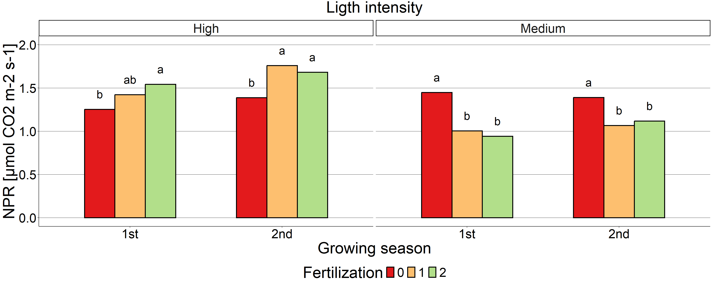

Análisis de componentes principales en Calafate (Berberis mycrophylla)
Variables respuesta:
TFS: Total fruiting shoots per plant
FNP: Fruit number per plant
FFWP: Fresh fruit weight per plant
FFW: Fresh fruit weight
DFW: Dry fruit weight
EFD: Equatorial fruit diameter
PFD: Polar fruit diameter
FC: Color del fruto FF: Fruit
firmness
NPR: Tasa de fotosíntesis (irradiancia=500)
Resultado PCA
## Importance of components:
## PC1 PC2 PC3 PC4 PC5 PC6 PC7 PC8 PC9 PC10
## Standard deviation 2.2778 1.6281 1.0828 0.76547 0.43251 0.33876 0.2864 0.12441 0.05225 0.02255
## Proportion of Variance 0.5188 0.2651 0.1172 0.05859 0.01871 0.01148 0.0082 0.00155 0.00027 0.00005
## Cumulative Proportion 0.5188 0.7839 0.9012 0.95974 0.97845 0.98992 0.9981 0.99968 0.99995 1.00000Heatmap

Scree plot para ver la varianza explicada por cada Principal
component

Contribuciones de las variables para CP1
Contribuciones de las variables para CP2
## PFD TFS FNP FFWP FFW EFD DFW FC FF NPR
## 16.867352 15.853562 15.060285 12.737096 11.847295 10.864138 9.875528 3.206205 2.480036 1.208502## FF FC DFW EFD FFW TFS FNP FFWP NPR
## 28.8503686 16.3677209 14.5320653 13.9601643 9.4003012 4.9076078 4.5666750 4.5445801 1.8907620
## PFD
## 0.9797548## NPR FC FFW FFWP EFD FNP PFD FF
## 57.909876917 18.206669873 6.814978175 5.255768439 4.153292131 2.763444267 1.870427459 1.586549627
## DFW TFS
## 1.436170038 0.002823075Contribución acumulada de cada variable a CP1 y CP2
## FF EFD DFW FFW TFS FNP FC PFD FFWP NPR
## 31.330405 24.824302 24.407593 21.247596 20.761170 19.626960 19.573926 17.847106 17.281677 3.099264Proporción de contribución de cada variable a PC1, PC2 y PC3

Biplots de PCA CP1 VS CP2
Biplots de PCA CP1 VS CP3

Análisis univariado Tasa de fotosíntesis (NPR)
## Analysis of Deviance Table (Type II Wald chisquare tests)
##
## Response: NPR_aj
## Chisq Df Pr(>Chisq)
## Fertilization 2.1554 2 0.3403858
## Ligth 82.7143 1 < 2.2e-16 ***
## Season 10.9737 1 0.0009241 ***
## Fertilization:Ligth 62.0704 2 3.323e-14 ***
## Fertilization:Season 2.7550 2 0.2522128
## Ligth:Season 2.8654 1 0.0905017 .
## Fertilization:Ligth:Season 2.8460 2 0.2409955
## ---
## Signif. codes: 0 '***' 0.001 '**' 0.01 '*' 0.05 '.' 0.1 ' ' 1Efectos simples
## $emmeans
## Ligth = High, Season = 1st:
## Fertilization response SE df asymp.LCL asymp.UCL
## 0 4.209045 0.4701398 Inf 3.381478 5.239148
## 1 4.378010 0.4863772 Inf 3.521373 5.443038
## 2 4.499106 0.5006865 Inf 3.617426 5.595680
##
## Ligth = Medium, Season = 1st:
## Fertilization response SE df asymp.LCL asymp.UCL
## 0 4.405079 0.4902337 Inf 3.541807 5.478762
## 1 3.960158 0.4398811 Inf 3.185399 4.923354
## 2 3.898135 0.4330483 Inf 3.135421 4.846384
##
## Ligth = High, Season = 2nd:
## Fertilization response SE df asymp.LCL asymp.UCL
## 0 4.343862 0.4819364 Inf 3.494927 5.399007
## 1 4.714838 0.5237293 Inf 3.792402 5.861640
## 2 4.637571 0.5151469 Inf 3.730252 5.765581
##
## Ligth = Medium, Season = 2nd:
## Fertilization response SE df asymp.LCL asymp.UCL
## 0 4.347186 0.4828749 Inf 3.496704 5.404526
## 1 4.023099 0.4468635 Inf 3.236041 5.001583
## 2 4.074973 0.4547397 Inf 3.274435 5.071228
##
## Confidence level used: 0.95
## Intervals are back-transformed from the log scale
##
## $contrasts
## Ligth = High, Season = 1st:
## contrast ratio SE df null z.ratio p.value
## Fertilization0 / Fertilization1 0.9614061 0.02362414 Inf 1 -1.602 0.2449
## Fertilization0 / Fertilization2 0.9355292 0.02379252 Inf 1 -2.620 0.0239
## Fertilization1 / Fertilization2 0.9730844 0.02200772 Inf 1 -1.206 0.4493
##
## Ligth = Medium, Season = 1st:
## contrast ratio SE df null z.ratio p.value
## Fertilization0 / Fertilization1 1.1123494 0.02507709 Inf 1 4.723 <.0001
## Fertilization0 / Fertilization2 1.1300480 0.02555829 Inf 1 5.406 <.0001
## Fertilization1 / Fertilization2 1.0159109 0.02191280 Inf 1 0.732 0.7446
##
## Ligth = High, Season = 2nd:
## contrast ratio SE df null z.ratio p.value
## Fertilization0 / Fertilization1 0.9213174 0.01914156 Inf 1 -3.944 0.0002
## Fertilization0 / Fertilization2 0.9366674 0.01946111 Inf 1 -3.149 0.0047
## Fertilization1 / Fertilization2 1.0166610 0.02185109 Inf 1 0.769 0.7222
##
## Ligth = Medium, Season = 2nd:
## contrast ratio SE df null z.ratio p.value
## Fertilization0 / Fertilization1 1.0805564 0.02322576 Inf 1 3.605 0.0009
## Fertilization0 / Fertilization2 1.0668012 0.02563643 Inf 1 2.691 0.0195
## Fertilization1 / Fertilization2 0.9872702 0.02372400 Inf 1 -0.533 0.8550
##
## P value adjustment: tukey method for comparing a family of 3 estimates
## Tests are performed on the log scale## $`simple contrasts for Fertilization`
## Ligth = High, Season = 1st:
## contrast ratio SE df asymp.LCL asymp.UCL null z.ratio p.value
## Fertilization1 / Fertilization0 1.0401432 0.02555891 Inf 0.9912358 1.0914636 1 1.602 0.1092
## Fertilization2 / Fertilization0 1.0689137 0.02718478 Inf 1.0169386 1.1235451 1 2.620 0.0088
## Fertilization2 / Fertilization1 1.0276601 0.02324203 Inf 0.9831015 1.0742384 1 1.206 0.2277
##
## Ligth = Medium, Season = 1st:
## contrast ratio SE df asymp.LCL asymp.UCL null z.ratio p.value
## Fertilization1 / Fertilization0 0.8989981 0.02026724 Inf 0.8601398 0.9396118 1 -4.723 <.0001
## Fertilization2 / Fertilization0 0.8849182 0.02001419 Inf 0.8465478 0.9250277 1 -5.406 <.0001
## Fertilization2 / Fertilization1 0.9843383 0.02123179 Inf 0.9435921 1.0268440 1 -0.732 0.4643
##
## Ligth = High, Season = 2nd:
## contrast ratio SE df asymp.LCL asymp.UCL null z.ratio p.value
## Fertilization1 / Fertilization0 1.0854023 0.02255064 Inf 1.0420917 1.1305130 1 3.944 0.0001
## Fertilization2 / Fertilization0 1.0676148 0.02218180 Inf 1.0250126 1.1119877 1 3.149 0.0016
## Fertilization2 / Fertilization1 0.9836121 0.02114077 Inf 0.9430375 1.0259323 1 -0.769 0.4420
##
## Ligth = Medium, Season = 2nd:
## contrast ratio SE df asymp.LCL asymp.UCL null z.ratio p.value
## Fertilization1 / Fertilization0 0.9254491 0.01989184 Inf 0.8872716 0.9652693 1 -3.605 0.0003
## Fertilization2 / Fertilization0 0.9373818 0.02252634 Inf 0.8942546 0.9825889 1 -2.691 0.0071
## Fertilization2 / Fertilization1 1.0128939 0.02433973 Inf 0.9662949 1.0617402 1 0.533 0.5939
##
## Confidence level used: 0.95
## Intervals are back-transformed from the log scale
## Tests are performed on the log scale
##
## $`simple contrasts for Ligth`
## Fertilization = 0, Season = 1st:
## contrast ratio SE df asymp.LCL asymp.UCL null z.ratio p.value
## Medium / High 1.0465744 0.02661568 Inf 0.9956874 1.1000622 1 1.790 0.0735
##
## Fertilization = 1, Season = 1st:
## contrast ratio SE df asymp.LCL asymp.UCL null z.ratio p.value
## Medium / High 0.9045566 0.01951409 Inf 0.8671070 0.9436236 1 -4.650 <.0001
##
## Fertilization = 2, Season = 1st:
## contrast ratio SE df asymp.LCL asymp.UCL null z.ratio p.value
## Medium / High 0.8664243 0.01959436 Inf 0.8288587 0.9056924 1 -6.340 <.0001
##
## Fertilization = 0, Season = 2nd:
## contrast ratio SE df asymp.LCL asymp.UCL null z.ratio p.value
## Medium / High 1.0007653 0.02079055 Inf 0.9608350 1.0423550 1 0.037 0.9706
##
## Fertilization = 1, Season = 2nd:
## contrast ratio SE df asymp.LCL asymp.UCL null z.ratio p.value
## Medium / High 0.8532848 0.01834370 Inf 0.8180788 0.8900060 1 -7.380 <.0001
##
## Fertilization = 2, Season = 2nd:
## contrast ratio SE df asymp.LCL asymp.UCL null z.ratio p.value
## Medium / High 0.8786869 0.02111845 Inf 0.8382553 0.9210687 1 -5.381 <.0001
##
## Confidence level used: 0.95
## Intervals are back-transformed from the log scale
## Tests are performed on the log scale
##
## $`simple contrasts for Season`
## Fertilization = 0, Ligth = High:
## contrast ratio SE df asymp.LCL asymp.UCL null z.ratio p.value
## 2nd / 1st 1.0320302 0.02464697 Inf 0.9848362 1.081486 1 1.320 0.1868
##
## Fertilization = 1, Ligth = High:
## contrast ratio SE df asymp.LCL asymp.UCL null z.ratio p.value
## 2nd / 1st 1.0769363 0.02322876 Inf 1.0323577 1.123440 1 3.436 0.0006
##
## Fertilization = 2, Ligth = High:
## contrast ratio SE df asymp.LCL asymp.UCL null z.ratio p.value
## 2nd / 1st 1.0307762 0.02323676 Inf 0.9862244 1.077341 1 1.345 0.1787
##
## Fertilization = 0, Ligth = Medium:
## contrast ratio SE df asymp.LCL asymp.UCL null z.ratio p.value
## 2nd / 1st 0.9868577 0.02224697 Inf 0.9442036 1.031439 1 -0.587 0.5573
##
## Fertilization = 1, Ligth = Medium:
## contrast ratio SE df asymp.LCL asymp.UCL null z.ratio p.value
## 2nd / 1st 1.0158938 0.02183520 Inf 0.9739865 1.059604 1 0.734 0.4632
##
## Fertilization = 2, Ligth = Medium:
## contrast ratio SE df asymp.LCL asymp.UCL null z.ratio p.value
## 2nd / 1st 1.0453649 0.02519256 Inf 0.9971363 1.095926 1 1.841 0.0656
##
## Confidence level used: 0.95
## Intervals are back-transformed from the log scale
## Tests are performed on the log scale
